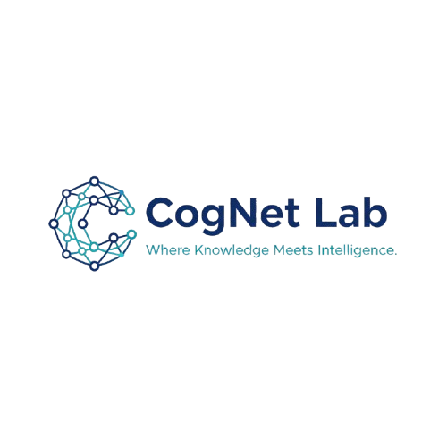

Exploring the frontiers of artificial intelligence, knowledge systems, and human-centered computing. We build intelligent systems that understand, reason, and interact with the world.
Research Focus
DecentraGov-Lab
Exploring how blockchain can enable trustworthy digital ecosystems for government, enterprise, and public services. We design decentralized frameworks for vehicle registration, digital rights management, and secure asset transfer with tamper-proof, transparent architectures.
AutoCyber-Sec
Developing intelligent systems that autonomously detect, analyze, and mitigate cyber threats in API-driven and cloud-native environments. Using anomaly detection, behavioral modeling, and knowledge-based threat reasoning to protect modern distributed systems.
PathAI-Nav
Investigating scalable algorithms for pathfinding and spatial reasoning in dynamic environments. Current work explores multi-threaded A* pathfinding, real-time navigation mesh updates, and AI-assisted optimization for games, robotics, and simulation platforms.
AI4-SE-Quality
Studying the role of AI in improving software quality assurance processes. Analyzing capabilities, limitations, and practical barriers to adoption. Building intelligent agents for automated test generation and defect prediction across the software engineering lifecycle.
Trust-SemanticAI
Exploring how semantic technologies bring structure, trust, and explainability to AI-driven systems. Investigating provenance, trust scoring, and transparent reasoning in knowledge-driven applications for enterprise and public-sector use.
Cognitive-AI Systems
Understanding how human cognition, age, and behavior influence interactions with AI-driven systems. Designing adaptive interfaces and personalized interaction models that improve usability, accessibility, and user satisfaction in intelligent applications.
We're always looking for motivated researchers, students, and collaborators who share our passion for intelligent systems, knowledge engineering, and human-centered AI. If you're interested in pursuing research in any of our focus areas, we'd love to hear from you.
Get in Touch